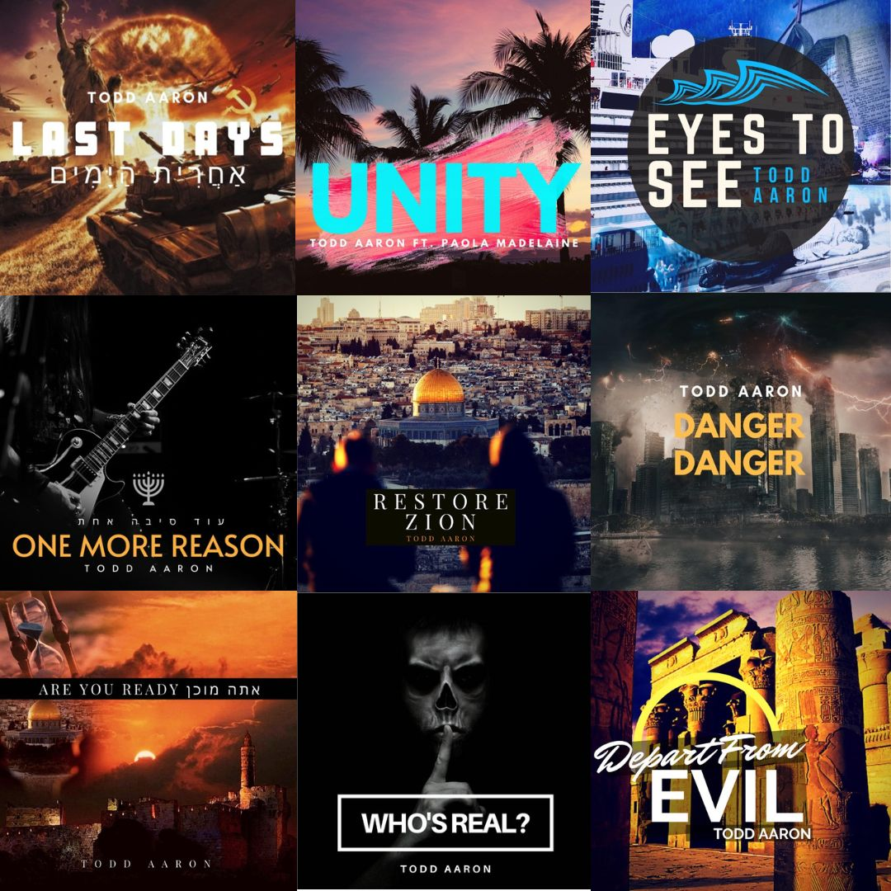

DOWNLOADS
in hopes of preserving it as long as is possible. Please feel free to download everything you can.
HOME SCREENS
|
Download Eyes for Eternity homescreens for mobile and desktop! |
MUSIC
 |
TODD AARON - RESTORE Todd Aaron's first album - June 1, 2020 |
|---|
 |
TODD AARON - RAGING SEAS TO MIGHTY PEACE Todd Aaron's second album - June 8, 2021 |
|---|
 |
TODD AARON - IGNITE THE FLAME Todd Aaron's third album - November 3, 2021 |
|---|
 |
TODD AARON - DEPARTING BABYLON Todd Aaron's fourth album - February 20, 2022 |
|---|
 |
TODD AARON - ENDURE Todd Aaron's fifth album - October 6, 2022 |
TODD AARON - ALL SINGLES Todd Aaron's singles 2014-2022 |
|---|
|  |
|---|
AUDIO BOOKS
 |
DAVID WILKERSON - THE VISION AND BEYOND David Wilkerson's prophetic call might sound like old newspaper headlines by now - but the warning and message of preparation is important. |
|---|
AUDIO SERMONS
TODD AARON AUDIO SERMONS (ALL) Here are audio version of Todd Aaron's sermons from the Ocean Wave Church in Colorado. Thanks to Keylanni for archiving them! |
|---|
MISCELLANEOUS
TODD AARON INSTAGRAM POSTS My friend Conor and myself have gathered our screenshots of Todd's posts back when he was active on social media. Nearly 40 posts here in this folder. |
|---|
ㅤ